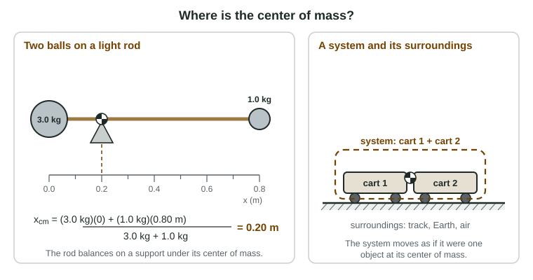

Unit 1 described motion: where something is, how fast it goes, how its velocity changes. Unit 2 asks why it moves that way. Before we can talk about pushes and pulls, we need two tools: a way to decide what we are studying (the system) and a single point that stands for the whole thing (the center of mass).
Picking what to study: the system
A system is the object, or group of objects, you decide to study. Draw an imaginary boundary around it. Everything outside the boundary is the surroundings. For a cart rolling on a track, the system might be the cart alone; the track, Earth and the air are then the surroundings. For two carts that collide, it is often smarter to choose both carts together as one system.
The choice is yours, and a good choice makes a problem easier. What you must do is say it out loud: "My system is the cart." Many exam justifications earn their point only because the student named the system first.
A system has its own properties, such as its total mass. Mass measures how much matter there is, in kilograms (kg), and it is a scalar: the mass of two carts together is just the sum of their masses. A system can also gain or lose mass, as a cart does when someone drops a sandbag into it.
When the insides do not matter
Every real object has internal structure: parts, joints, molecules. A diver's arms and legs move relative to her body. Sometimes those details are the whole question: how bending your knees helps you jump is about how your legs push on the rest of you. Often they are not. If the question is "where does the diver hit the water?", her flailing arms do not change the answer. Then you may treat the whole system as one point object, exactly as you did in Unit 1.
The test is simple: if the question is about how the parts move relative to one another, keep the structure. If it is only about where the system as a whole goes, shrink it to a point.
Which point? The center of mass

The point that stands for the system is its center of mass. It is an average position, but a weighted one: each part counts in proportion to its mass. For point objects on a line,
xcm = (m₁x₁ + m₂x₂ + m₃x₃ + …) ÷ (m₁ + m₂ + m₃ + …) = Σmixi ÷ Σmi
This equation is on the exam's equations sheet. Read it as "add up each mass times its position, then divide by the total mass." If all the masses are equal it becomes the ordinary average, the midpoint. If one mass is larger, the center of mass moves toward it. It always lies between the outermost objects, never beyond them.
Worked example 1. A 3.0 kg ball and a 1.0 kg ball sit at the ends of a light rod 0.80 m long. Where is the center of mass?
Choose the origin at the 3.0 kg ball, positive toward the 1.0 kg ball. Then x₁ = 0 and x₂ = 0.80 m.
xcm = (3.0 kg × 0 + 1.0 kg × 0.80 m) ÷ (3.0 kg + 1.0 kg) = 0.80 kg·m ÷ 4.0 kg = 0.20 m from the heavy ball.
Check: the heavy ball has three times the mass, so the center of mass is three times closer to it (0.20 m) than to the light ball (0.60 m).
In two dimensions, do the same thing twice: once for the x-coordinates and once for the y-coordinates. The exam keeps this to five objects or fewer, or to objects so symmetric that you can see the answer.
Worked example 2. Three small objects lie on a floor: 1.0 kg at (0, 0), 1.0 kg at (2.0 m, 0) and 2.0 kg at (1.0 m, 3.0 m). Find the center of mass.
xcm = (1.0 × 0 + 1.0 × 2.0 + 2.0 × 1.0) kg·m ÷ 4.0 kg = 4.0 kg·m ÷ 4.0 kg = 1.0 m
ycm = (1.0 × 0 + 1.0 × 0 + 2.0 × 3.0) kg·m ÷ 4.0 kg = 6.0 kg·m ÷ 4.0 kg = 1.5 m
The center of mass is at (1.0 m, 1.5 m): on the line of symmetry x = 1.0 m, and pulled up toward the heavier object.
Symmetry does the work
For an object whose mass is spread evenly (a uniform object), the center of mass lies on every line of symmetry. A uniform meterstick balances at its 50 cm mark. A uniform rectangle's center of mass is where its two symmetry lines cross. A uniform ring's center of mass is at its center, where there is no metal at all. A center of mass is a position, not a piece of the object.
You can also replace a uniform part by a point at its own center. A 0.12 kg uniform stick holding clamps behaves, for this purpose, like a 0.12 kg point at its middle.
Why the center of mass matters
Throw a wrench spinning across ice. Its head and handle trace loops, but its center of mass slides in a straight line at a steady speed. Toss it through the air and its center of mass follows a clean projectile parabola while the rest of it tumbles. The center of mass is the one point that moves as if the whole system were a single point object. Later in this unit you will see why: only pushes and pulls from the surroundings can change how the center of mass moves.
| Question | Model |
|---|---|
| Where will a tumbling object land? | One point at the center of mass |
| How fast does a sliding box move? | One point at the center of mass |
| How does an athlete's leg push the rest of her body? | Keep the internal structure |
| Why does a spinning top stay up? | Keep the internal structure |
Common slips
First, taking the midpoint when the masses differ: weight each position by its mass. Second, forgetting to divide by the total mass, which leaves an answer in kg·m instead of m. Third, adding a new object and dividing by the old total mass: the new mass goes in both the top and the bottom. Fourth, never naming the system: write "the system is …" before you reason about it.